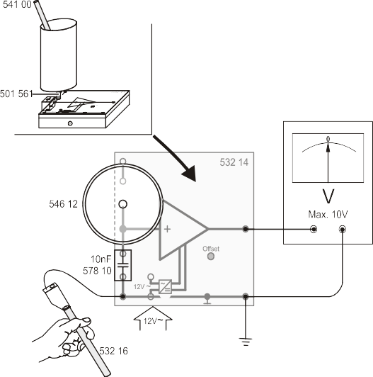
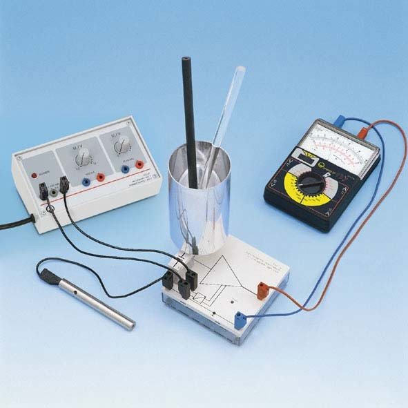

Elektrometrik kuçaytirgiç yordamida elektrostatikaning asosiy tajribalarini bajariş
1Işning maqsadi va kutilayotgan natijalar
Elektrometrik kuçaytirgiç va Faradey çaşkasi yordamida: (1) ikki işqalaniş tayoqçasi bir-biriga ta’sir ettirilganda zaryadlarning ajralişini; (2) tayoqça işqalaş materiali bilan işqalanganda zaryadlarning ajralişini tekşiriş; (3) turli materiallar bilan işqalangan tayoqçalar zaryadining işorasini aniqlaş.
Fan dasturidagi ta’lim natijalari: TN1 — Elektr va magnit zanjirlarini töğri yiğiş, ölçov asboblaridan (ampermetr, voltmetr, multimetr, osillograf) töğri va xavfsiz foydalaniş; TN2 — Fizik hodisalarni tajribada namoyiş qiliş, ölçov işlarini bajariş va natijalar aniqligini ta’minlaş; TN4 — Fizik hodisalarning fenomenologik mohiyatini öquvçilarga sodda, körgazmali va tuşunarli yetkaziş; TN7 — Elektr zanjirlari va yuqori kuçlanişli qurilmalar bilan işlaşda texnika xavfsizligiga rioya qiliş.
2Kerakli jihozlar
- Elektrometrik kuçaytirgiç (kiriş qarşiligi \(\approx10^{13}\) Om, çiqiş qarşiligi \(\approx1\) Om) va 230 V li tarmoq manbai
- Faradey çaşkasi, ulaş tayoqçasi, tutgiç ştepsel
- Multimetr (kuçlaniş çegarasi 10 V)
- Siğimi 1–10 nF bölgan kondensator (kuçaytirgiç kirişiga ulanadi)
- Işqalaniş tayoqçalari: PVC, akril (organik şişa), ebonit, şişa
- Işqalaş materiallari: teri, möyna, ipak, qoğoz, polietilen folga; induksion tarelka (plastinka)
- 100 sm li qizil/kök kabellar jufti, 50 sm li qora ulaş kabeli
- Qöşimça: tutunsiz olov manbai — butan gaz gorelkasi (tayoqçalarni zaryadsizlantiriş uçun)
3Nazariy qism
1.1. Işqalaniş va tegiş orqali zaryadlaniş
Ikki material bir-biriga işqalanganda yoki tekkizilganda elektronlar bir jismdan ikkinçisiga ötadi: elektron yöqotgan jism musbat, elektron olgan jism manfiy zaryadlanadi. Tajriba körsatadiki, hosil bölgan zaryadlar moduli teng va işorasi qarama-qarşi böladi — ikkala jism zaryadi bir vaqtda ölçansa, ular bir-birini kompensatsiyalaydi (zaryadning saqlaniş qonuni):
$$q_1+q_2=0,\qquad \sum q_i=\text{const}.$$Material qanday işorali zaryadlanişi faqat uning öziga emas, balki ikkinçi materialning xossalariga ham boğliq (triboelektrik qator).
1.2. Elektrometrik kuçaytirgiç va Faradey çaşkasi
Juda kiçik zaryadlarni ölçaş uçun elektrometrik kuçaytirgiçdan foydalaniladi. Uning kiriş qarşiligi juda katta (\(\sim10^{13}\) Om), çiqiş qarşiligi esa juda kiçik (\(\sim1\) Om) — şuning uçun kirişdagi zaryad oqib ketmaydi, çiqişga esa oddiy multimetr ulaş mumkin. Kirişga parallel ulangan \(C\) siğimli kondensator Faradey çaşkasiga kiritilgan zaryadni yiğadi:
$$q=C\,U,$$bu yerda \(U\) — multimetr körsatişi. Faradey çaşkasiga kiritilgan zaryadlangan jism (hatto unga tegmasa ham) çaşkaning taşqi sirtida teng zaryad induksiyalaydi, şuning uçun asbob jismning zaryadini ham, işorasini ham (strelka oğiş yönalişi böyiça) körsatadi.


1.3. Zaryadsizlantiriş
Aniq natija oliş uçun tajribadan oldin tayoqçalar va Faradey çaşkasi zaryadsizlantiriladi. Tayoqça kuçsiz (unçalik yorqin bölmagan) olov ustidan butun uzunligi böyiça bir neça marta ötkaziladi — alanga ionlaştirgan havo sirtdagi zaryadni neytrallaydi. Faradey çaşkasi esa unga ulaş tayoqçasini multimetr \(U=0\) V ni körsatgunça tekkizib zaryadsizlantiriladi.
4Işni bajariş tartibi
a) Ikki işqalaniş tayoqçasini bir-biriga ta’sir ettiriş
- Işqalaniş tayoqçasini kuçsiz olov ustidan butun uzunligi böyiça bir neça marta ötkazib zaryadsizlantiring.
- Faradey çaşkasini zaryadsizlantiriş uçun unga ulaş tayoqçasini multimetr \(U=0\) V ni körsatgunça tekkizing.
- Zaryadsizlantirilgan PVC va akril tayoqçalarni bir-biriga bir neça marta işqalang (ta’sir ettiring), söng ularni ajrating.
- PVC tayoqçani uzunligining törtdan bir qismi kiradigan qilib Faradey çaşkasiga kiriting va multimetr körsatişini (oğiş yönalişini) yozing.
- Xuddi şu tajribani akril tayoqça bilan takrorlang.
- Ikkala tayoqçani bir vaqtda Faradey çaşkasiga kiriting: körsatiş nolga yaqin bölişi kerak — zaryadlar teng va qarama-qarşi işorali.
Induksion plastinka yordamida zaryadni tayoqçadan Faradey çaşkasiga köçirişni ham namoyiş qiliş mumkin: tayoqça plastinkaga tekkiziladi, söng plastinka çaşkaga kiritiladi va köçgan zaryad ölçanadi.
b) Tayoqçani teri bilan işqalaş
- Zaryadsizlantirilgan akril tayoqçani teri bilan işqalang, uni uzunligining çoragi kiradigan qilib Faradey çaşkasiga joylaştiring va körsatişni yozing; söng tayoqçani çiqarib oling.
- Zarur bölsa, çaşkani zaryadsizlantiring. Teri materialni oçiq Faradey çaşkasiga qöying va körsatişni yozing, söng terini çiqarib oling.
- Ebonit va şişa tayoqçalar uçun ipak va möyna bilan tajribani takrorlab, 1.1-jadvalni töldiring.
c) Turli materiallar bilan işqalangan tayoqçalar zaryadining işorasi
- PVC va akril tayoqçalarni navbatma-navbat polietilen, teri va qoğoz bilan işqalang.
- Har safar zaryadlangan tayoqçani Faradey çaşkasiga uzunligining çoragi kiradigan qilib joylaştiring.
- Zaryad işorasini multimetr strelkasining oğiş yönalişiga qarab 1.2-jadvalga yozing.
1.1-jadval. Işqalaniş tayoqçasi va işqalaş materiali zaryadlarining işoralari
| Işqalaniş tayoqçasi | Tayoqça zaryadi işorasi | Işqalaş materiali | Material zaryadi işorasi |
|---|---|---|---|
| Akril | Teri | ||
| Ebonit | Ipak | ||
| Ebonit | Möyna | ||
| Şişa | Ipak | ||
| Şişa | Möyna |
Jadval katakçalariga bevosita yoziş mumkin (ma’lumotlar sahifa yopilganda saqlanmaydi — hisobotga köçirib oling).
1.2-jadval. Turli materiallar bilan işqalangan tayoqçalar zaryadining işorasi
| Işqalaniş tayoqçasi | Işqalaş materiali | Tayoqça zaryadi işorasi | U, V | q = CU, nKl |
|---|---|---|---|---|
| Akril | Polietilen | |||
| PVC | Polietilen | |||
| Akril | Teri | |||
| PVC | Teri | |||
| Akril | Qoğoz | |||
| PVC | Qoğoz |
Jadval katakçalariga bevosita yoziş mumkin (ma’lumotlar sahifa yopilganda saqlanmaydi — hisobotga köçirib oling).
5Natijalarni qayta işlaş va xatoliklar
Har bir ölçaş uçun zaryad miqdori \(q=CU\) formula bilan hisoblanadi (\(C\) — kuçaytirgiç kirişidagi kondensator siğimi). Tayoqça va işqalaş materiali zaryadlarini soliştiring: \(|q_{\text{tayoqcha}}|\approx|q_{\text{material}}|\) bölişi kerak. Köçgan elektronlar soni: \(N=|q|/e\).
Nisbiy farq: \(\delta=\dfrac{\big||q_1|-|q_2|\big|}{(|q_1|+|q_2|)/2}\cdot100\%\). Farqning sabablari: sirt böylab zaryadning oqib ketişi (namlik), tayoqçaning çaşkaga turliça çuqurlikda kiritilişi, qöl orqali qisman zaryadsizlaniş.
Xulosalar
- Işqalaniş tayoqçalari işqalaş materiallari bilan işqalanganda ularda zaryad hosil böladi.
- Zaryadlanişda elektronlar bir jismdan (tayoqça yoki materialdan) ikkinçisiga ötadi.
- Elektron yöqotgan jism musbat, elektron qabul qilgan jism manfiy zaryadlanadi.
- Tayoqça va işqalaş materiali zaryadlarining işoralari har doim qarama-qarşi böladi.
- Tayoqça oladigan zaryad işorasi tayoqça va işqalaş materialining turiga boğliq.
Xatoliklar nazariyasi: laboratoriyaga kiriş bölimi.
Takroriy ölçaşlar kalkulyatori
Eng kiçik kvadratlar usuli (töğri çiziq y = kx + b)
6Namunaviy hisob
Şart. Kuçaytirgiç kirişiga \(C=10\) nF kondensator ulangan. Teri bilan işqalangan akril tayoqça Faradey çaşkasiga kiritilganda multimetr \(U=+2{,}4\) V, teri kiritilganda \(U=-2{,}3\) V körsatdi. Zaryadlarni, köçgan elektronlar sonini va zaryadlar farqini toping.
Yeçimni körsatiş
\(q_1=CU_1=10^{-8}\cdot2{,}4=2{,}4\cdot10^{-8}\) Kl \(=24\) nKl (akril — musbat). \(q_2=10^{-8}\cdot(-2{,}3)=-23\) nKl (teri — manfiy). Köçgan elektronlar soni \(N=q_1/e=2{,}4\cdot10^{-8}/1{,}6\cdot10^{-19}\approx1{,}5\cdot10^{11}\). Nisbiy farq \(\delta=1/23{,}5\cdot100\%\approx4\%\) — zaryadning saqlaniş qonuni ölçaş aniqligi doirasida bajariladi; farq sirt böylab zaryad yöqolişi bilan izohlanadi.
7Virtual laboratoriya: Elektrostatikaning asosiy tajribalari
- Bu yassi kondensator. Plastinalarda 10 nanokulon zaryad, oraliq 5 millimetr. Elektrometr 141 volt körsatmoqda, siğim 70,8 pikofarad.
- Zaryadni özgartirmasdan plastinalarni 10 millimetrgaça uzoqlaştiramiz. Kuçlaniş ikki marta ortdi, maydon kuçlanganligi esa özgarmadi. Grafikda bu töğri çiziq.
- Endi oraliqni şişa bilan töldiramiz. Dielektrik singdiruvçanlik 7 bölgani uçun kuçlaniş 7 marta kamaydi, energiya ham şunça kamaydi.
- Namoyiş tugadi. Endi parametrlarni özingiz özgartirib, natijalarni jadvalga yozing.
Virtual laboratoriyadagi topşiriqlar
- \(q\) ni özgartirmasdan \(d\) ni ikki marta oşiring: \(U\), \(E\), \(C\) qanday özgaradi?
- Dielektrik singdiruvçanlikni 1 dan 7 gaça oşirib, kuçlaniş va energiya kamayişini tuşuntiring.
- Model körsatkiçlari böyiça \(U(d)\) jadvalini tuzing va qiyalikdan zaryadni qayta hisoblang.
Model öquv maqsadida soddalaştirilgan. “Asbob körsatişi” deb belgilangan qiymatlarga real ölçaşdagi kabi kiçik tasodifiy çetlaniş qöşilgan — takroriy ölçaşlar uçun foydalaning.
8Texnika xavfsizligi
- Kuçaytirgiç kirişi va Faradey çaşkasini qöl bilan uşlamang — tanadagi zaryad ölçaşni buzadi.
- Gaz gorelkasi bilan faqat öqituvçi ruxsatidan keyin işlang: tayoqçani alangada qisqa vaqt va bir tekis harakatlantiring, PVC tayoqçani qizdirib yubormang (zaharli gaz ajraladi).
- Gorelka yonida qoğoz, folga va kiyimni qoldirmang; işdan keyin gaz ventilini yoping.
- Tajribalar oraliğida Faradey çaşkasini zaryadsizlantiring.
9Himoya uçun nazorat savollari
- Işqalaniş orqali elektrlaniş hodisasining mohiyati nimadan iborat?
- Elektr zaryadining saqlaniş qonunini ta’riflang.
- Elektrometrik kuçaytirgiçning kiriş qarşiligi nima uçun juda katta bölişi kerak?
- Faradey çaşkasi qanday vazifani bajaradi va uning işlaş prinsipi nimaga asoslangan?
- Ikki jism bir-biriga işqalanganda ularning qaysi biri musbat, qaysi biri manfiy zaryadlanişi nimaga boğliq?
- Tajriba oldidan işqalaniş tayoqçasi va Faradey çaşkasi nima uçun zaryadsizlantiriladi?
Mustahkamlaş: FSMU texnologiyasi
“Jismlarning zaryadlanişi” mavzusida fikringizni tört bosqiçda yozing: F — fikringizni bayon eting; S — fikringiz bayoniga sabab körsating; M — körsatgan sababingizni isbotlovçi misol keltiring; U — fikringizni umumlaştiring.
10Nazorat testi (10 savol, öz-özini tekşiriş)
1. Teri bilan işqalangan akril tayoqça musbat zaryadlandi. Teri qanday zaryadlanadi?
2. Faradey çaşkasiga kirişiga \(C=10\) nF ulangan kuçaytirgiç \(U=3\) V körsatdi. Zaryad:
3. Elektrometrik kuçaytirgiçning kiriş qarşiligi juda katta bölişi nima uçun kerak?
4. Işqalanişda jismlar orasida nima köçadi?
5. Bir-biriga işqalangan PVC va akril tayoqçalar bir vaqtda Faradey çaşkasiga kiritilsa, asbob:
6. Tayoqçani zaryadsizlantiriş uçun kuçsiz olov ustidan ötkazişning sababi:
7. Faradey çaşkasi zaryadni qanday ölçaydi?
8. Tayoqça qanday işorali zaryadlanişi nimaga boğliq?
9. Multimetr strelkasining oğiş yönalişi nimani körsatadi?
10. Nam havoda elektrostatik tajribalar yomon çiqişining asosiy sababi:
Bu test öz-özini tekşiriş uçun; rasmiy oraliq nazorat HEMIS’da ötkaziladi.
11Sun’iy intellekt bilan işlaş
Men pedagogika oliygohining fizika yönalişi talabasiman. “Elektrometrik kuçaytirgiç yordamida elektrostatikaning asosiy tajribalarini bajariş” laboratoriya işini bajardim. 1) Mening ölçaş jadvalimni tekşir: birliklar, xonalar soni, aniq xato yozuvlar. 2) Natijani qayta işlaş bosqiçlarini tuşuntir (örtaça, Styudent usuli, bilvosita ölçaş xatoligi), lekin hisobni özim bajaraman. 3) Natijam jadval qiymatidan farq qilsa, mumkin bölgan tizimli xatolik manbalarini sanab ber. 4) Himoya uçun 3 ta savol ber. Çeklov: formulalarni LaTeX’da yoz, işonçing komil bölmagan joyni oçiq ayt. [Şu yerga ölçaş jadvalingizni qöying]
12Adabiyotlar
- [2] Toşxonova J.A. va boşq. Fizikadan praktikum. Elektr va magnetizm. — Toşkent, 2006.
- [5] Nurmatov N. Elektr va magnetizm fanidan praktikum. — 2021.
- [1] Orifjonov S. Elektromagnitizm. — Toşkent, 2011.
- Purcell E.M., Morin D.J. Electricity and Magnetism. 3rd ed. — Cambridge University Press, 2013.
- Halliday D., Resnick R., Walker J. Fundamentals of Physics. 12th ed. — Hoboken: Wiley, 2021.
[1]–[5] — fan dasturidagi asosiy, [Q…] — qöşimça adabiyotlar raqamlanişi. Xalqaro darsliklar çuqurlaştiriş uçun tavsiya etiladi.
Öqituvçi uçun: 80 daqiqalik maşğulot rejasi
| Vaqt | Bosqiç | Faoliyat |
|---|---|---|
| 0–10 | Kiriş nazorati (dopusk) | Himoya savollaridan 2–3 tasi; xavfsizlik böyiça yöriqnoma; jurnalga qayd |
| 10–25 | Yiğiş va sozlaş | Zanjir/qurilmani yiğiş, öqituvçi tekşiruvi; jihoz yetişmasa — virtual laboratoriya |
| 25–55 | Ölçaş | Jadvalni töldiriş, takroriy ölçaşlar; virtual model bilan soliştiriş |
| 55–70 | Qayta işlaş | Grafik, eng kiçik kvadratlar, xatoliklar; kalkulyatorlar bilan tekşiriş |
| 70–80 | Himoya | Xulosa, nazorat savollari; DF bali (JN tarkibida) |
Maşğulot: L1–L2 (fan dasturi böyiça). Batafsil: öqituvçi qöllanmasi.